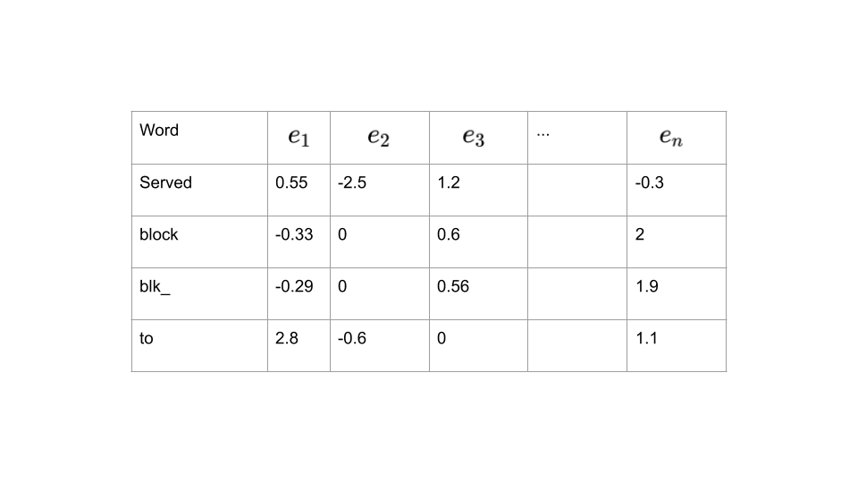

Template Extraction based on Word Embedding
@Isaac Cohen Sabban wrote
This page is a summary of many ML Meetings about Template Extraction based on Word Embedding
Preprocessing step
Before start the Template Extraction, we clean our logs by :
- Remove punctuation
- Remove number out of a word : d3l3t3 rest d3l3t3, 3 Go of RAM become Go of RAM
def preprocess(sentence):
""" INPUT : Sentence
OUTPUT : Sentence
Pre processing step for text """
sentence=str(sentence)
sentence = sentence.lower()
cleantext = re.sub(r'[^\w\s]',' ',sentence)
remove_punct = re.sub('[^A-Za-z0-9]+', ' ', cleantext)
rem_num = re.sub("(\s\d+)", ' ', remove_punct)
tokenizer = RegexpTokenizer(r'\w+')
tokens = tokenizer.tokenize(rem_num)
return " ".join(tokens)
How to send our logs in our embedding space
For each word in the template, we get it embedding vector
{kind=link}

Then we aggregate by taking the sum or the mean for each embedding axis

Once the logs are embedded, we can create some clusters.
Clustering step
Associate logs between them
Two approaches were tested :
- Pre-trained FastText model + Graph based Clustering algorithm (@Marwen Sallem)
- Train FastText model + Graph based Clustering algorithm
First Approach :
Algorithm :
@Marwen Sallem wrote
The approach is based on a pre-trained FastText model that we found here : https://fasttext.cc/docs/en/english-vectors.html
Before using the model, the logs were preprocessed by applying those transformations :
- Lowercase
- Remove all the numbers
def preprocess(sentence):
""" INPUT : Sentence
OUTPUT : Sentence
Pre processing step for text """
sentence = str(sentence)
sentence = sentence.lower()
sentence = re.sub("(\s\d+)", ' ', sentence)
return sentenceThen using the pre-trained model, we project all the tokens of the logs to the embedding space.
For each log, we take the weighted mean of the projected token to end-up with one vector for each log. The weighs are computed as following :
Using the created vectors from the weighted mean, we compute the cosine similarity between all the logs.
Based on a given threshold, we compute the adjacency matrix (Graph) that connects the most similar logs together. Thereafter, we extract the connected components (clusters of similar logs).
Evaluation :
To evaluate this method, we propose to do the following approach :
- Consider the HDFS 100K dataset
- To check the robustness of the results are stable we split the dataset to train and test (where )
Results :
Accuracy of 1st Approach vs 2nd Approach :

Time of 1st Approach vs 2nd Approach :

Comments :
- Pre-trained models are good to starts with, but they are not trained for this specific data
- Pre-trained model is dimension, cosine_similarity can be less accurate with big dimensions
Second Approach
due to some optimization, this approach was updated by @Isaac Cohen Sabban
Algorithm
- Pre processing step
- Remove the numbers from logs
- Compute the Embedding matrix from scratch
- Project the tokens of each logline to the embedding space
- Create cluster
- Compute the cosine similarity between all the logs
- Find the argmax of each row logs
- Define the argmax as a centroid
- Prediction step
- Compute the cosine similarity between the logs and the centroids
- Find the max cos sim
- Find the argmax of each row logs
- Output the cluster and the maximum value
- Update the clustering
- If the max cos sim<0.99 we update the clustering by adding new centroid
- We repeat the 2nd only on logs where cos sim is under 0.99
Results
Drain
=== Evaluation on 5000 ===
Performance on train
Precision: 1.0000, Recall: 1.0000, F1_measure: 1.0000, Parsing_Accuracy: 0.9980
----- Reading data complete in 0:00:02.797570 seconds
Performance on test
Precision: 1.0000, Recall: 1.0000, F1_measure: 1.0000, Parsing_Accuracy: 0.7722
=== Evaluation on 10000 ===
Performance on train
Precision: 1.0000, Recall: 1.0000, F1_measure: 1.0000, Parsing_Accuracy: 0.9990
----- Reading data complete in 0:00:03.026069 seconds
Performance on test
Precision: 1.0000, Recall: 1.0000, F1_measure: 1.0000, Parsing_Accuracy: 0.7712
=== Evaluation on 20000 ===
Performance on train
Precision: 1.0000, Recall: 1.0000, F1_measure: 1.0000, Parsing_Accuracy: 0.9995
----- Reading data complete in 0:00:02.953573 seconds
Performance on test
Precision: 1.0000, Recall: 1.0000, F1_measure: 1.0000, Parsing_Accuracy: 0.7704
=== Evaluation on 30000 ===
Performance on train
Precision: 1.0000, Recall: 1.0000, F1_measure: 1.0000, Parsing_Accuracy: 0.9997
----- Reading data complete in 0:00:03.114977 seconds
Performance on test
Precision: 1.0000, Recall: 1.0000, F1_measure: 1.0000, Parsing_Accuracy: 0.7700
=== Overall evaluation results ===
Dataset size time F1_measure Accuracy
0 5000 00:00:02.797570 0.999987 0.772239
1 10000 00:00:03.026069 0.999986 0.771249
2 20000 00:00:02.953573 0.999985 0.770430
3 30000 00:00:03.114977 0.999982 0.770006
Fasttext
=== Evaluation on 5000 ===
Performance on train
Precision: 1.0000, Recall: 0.9994, F1_measure: 0.9997, Parsing_Accuracy: 0.9404
----- Reading data complete in 0:13:16.291651 seconds
Performance on test
Precision: 1.0000, Recall: 1.0000, F1_measure: 1.0000, Parsing_Accuracy: 0.9225
=== Evaluation on 10000 ===
Performance on train
Precision: 1.0000, Recall: 0.9997, F1_measure: 0.9998, Parsing_Accuracy: 0.9354
----- Reading data complete in 0:19:54.297629 seconds
Performance on test
Precision: 1.0000, Recall: 1.0000, F1_measure: 1.0000, Parsing_Accuracy: 0.9221
=== Evaluation on 20000 ===
Performance on train
Precision: 1.0000, Recall: 0.9998, F1_measure: 0.9999, Parsing_Accuracy: 0.9307
----- Reading data complete in 0:11:53.063925 seconds
Performance on test
Precision: 1.0000, Recall: 1.0000, F1_measure: 1.0000, Parsing_Accuracy: 0.9216
=== Evaluation on 30000 ===
Performance on train
Precision: 1.0000, Recall: 0.9999, F1_measure: 1.0000, Parsing_Accuracy: 0.9285
----- Reading data complete in 0:27:03.627779 seconds
Performance on test
Precision: 1.0000, Recall: 1.0000, F1_measure: 1.0000, Parsing_Accuracy: 0.9212
=== Overall evaluation results ===
Dataset size time F1_measure Accuracy
0 5000 00:13:16.291651 0.999996 0.922477
1 10000 00:19:54.297629 0.999996 0.922059
2 20000 00:11:53.063925 0.999995 0.921594
3 30000 00:27:03.627779 0.999995 0.921246
After optimisation
=== Overall evaluation results ===
Dataset size time F1_measure Accuracy
0 5000 00:02:40.800458 0.999996 0.922477
1 10000 00:03:14.581852 0.999996 0.922059
2 20000 00:06:12.660419 0.999995 0.921594
3 30000 00:15:09.901954 0.999995 0.921246
=== Overall evaluation results ===
Dataset size time F1_measure Accuracy
0 5000 00:02:31.275919 0.999996 0.922477
1 10000 00:03:05.978014 0.999996 0.922059
2 20000 00:05:56.568648 0.999995 0.921594
3 30000 00:13:18.720291 0.999995 0.921246UPDATE du 23/11
=== Overall evaluation results ===
Dataset size time F1_measure Accuracy
0 5000 00:01:06.114180 0.999986 0.696388
1 10000 00:01:07.692385 0.999996 0.922059
2 20000 00:01:12.179765 0.999996 0.921594
3 30000 00:01:17.713567 0.999995 0.921246
4 40000 00:01:33.644281 0.999994 0.920991
5 50000 00:01:35.481118 0.999993 0.920733
precision recall f1-score support
HDFS 1.00 1.00 1.00 2000
Hadoop 1.00 0.98 0.99 2000
Spark 1.00 0.99 0.99 2000
Zookeeper 0.99 0.99 0.99 2000
BGL 0.98 0.98 0.98 2000
HPC 0.99 0.99 0.99 2000
Thunderbird 0.97 0.97 0.97 2000
Windows 0.99 0.99 0.99 2000
Linux 0.99 0.96 0.98 2000
Andriod 0.98 0.98 0.98 2000
HealthApp 0.99 0.99 0.99 2000
Apache 1.00 1.00 1.00 2000
Proxifier 0.99 1.00 1.00 2000
OpenSSH 0.99 0.99 0.99 2000
OpenStack 0.99 1.00 0.99 2000
Mac 0.96 0.97 0.96 2000
accuracy 0.99 32000
macro avg 0.99 0.99 0.99 32000
weighted avg 0.99 0.99 0.99 32000
=== Overall evaluation results ===
F1_measure Accuracy
Dataset
HDFS 0.915019 0.8085
Hadoop 0.999265 0.9435
Spark 0.993867 0.9255
Zookeeper 0.990474 0.8960
BGL 0.928802 0.5855
HPC 0.994465 0.8720
Thunderbird 0.524364 0.2155
Windows 0.779337 0.7030
Linux 0.248019 0.1825
Andriod 0.899773 0.6805
HealthApp 1.000000 1.0000
Apache 1.000000 1.0000
Proxifier 0.238857 0.0010
OpenSSH 0.936765 0.3355
OpenStack 0.727541 0.2130
Mac 0.634962 0.6935
****F1 Mean****
0.8007193851362324
****Acc Mean****
0.62846875Compare to this page we have +10% in terme of accuracy
=== Overall evaluation results ===
F1_measure Accuracy
Dataset
HDFS 0.992566 0.9400
Hadoop 0.888871 0.7035
Spark 0.993867 0.9255
Zookeeper 0.998546 0.9245
BGL 0.595906 0.0915
HPC 0.980088 0.7530
Thunderbird 0.998261 0.6480
Windows 0.988979 0.7130
Linux 0.207188 0.0995
Andriod 0.972793 0.8305
HealthApp 1.000000 1.0000
Apache 0.667201 0.0000
Proxifier 0.201061 0.0000
OpenSSH 0.874723 0.3325
OpenStack 0.717619 0.2120
Mac 0.580029 0.2235
****F1 Mean****
0.791106109679238
****Acc Mean****
0.5248125
Deeplog
On 2M logs
Embedding
*****EMBEDDING*****
_________________________________________________________________
Layer (type) Output Shape Param #
=================================================================
input_1 (InputLayer) [(None, 10, 1)] 0
_________________________________________________________________
bidirectional (Bidirectional (None, 10, 128) 33792
_________________________________________________________________
bidirectional_1 (Bidirection (None, 128) 98816
_________________________________________________________________
dense (Dense) (None, 11) 1419
=================================================================
Total params: 134,027
Trainable params: 134,027
Non-trainable params: 0
_________________________________________________________________
2 best proba
FP:19211
FN: 240
TP: 760
TN: 2276
false positive (FP): 19211, false negative (FN): 240, Precision: 3.806%, Recall: 76.000%, F1-measure: 7.248%
Finished Predicting
3 best proba
FP:6022
FN: 509
TP: 491
TN: 15465
false positive (FP): 6022, false negative (FN): 509, Precision: 7.539%, Recall: 49.100%, F1-measure: 13.071%
Finished Predicting
4 best proba
FP:108
FN: 656
TP: 344
TN: 21379
false positive (FP): 108, false negative (FN): 656, Precision: 76.106%, Recall: 34.400%, F1-measure: 47.383%
Finished Predicting
5 best proba
FP:12
FN: 932
TP: 68
TN: 21475
false positive (FP): 12, false negative (FN): 932, Precision: 85.000%, Recall: 6.800%, F1-measure: 12.593%
Finished Predicting
6 best proba
FP:7
FN: 974
TP: 26
TN: 21480
false positive (FP): 7, false negative (FN): 974, Precision: 78.788%, Recall: 2.600%, F1-measure: 5.034%
Finished Predicting
7 best proba
FP:0
FN: 974
TP: 26
TN: 21487
false positive (FP): 0, false negative (FN): 974, Precision: 100.000%, Recall: 2.600%, F1-measure: 5.068%
Finished Predicting
8 best proba
FP:0
FN: 974
TP: 26
TN: 21487
false positive (FP): 0, false negative (FN): 974, Precision: 100.000%, Recall: 2.600%, F1-measure: 5.068%
Finished Predicting
9 best proba
FP:0
FN: 974
TP: 26
TN: 21487
false positive (FP): 0, false negative (FN): 974, Precision: 100.000%, Recall: 2.600%, F1-measure: 5.068%
Finished PredictingDrain
*****DRAIN*****
_________________________________________________________________
Layer (type) Output Shape Param #
=================================================================
input_2 (InputLayer) [(None, 10, 1)] 0
_________________________________________________________________
bidirectional_2 (Bidirection (None, 10, 128) 33792
_________________________________________________________________
bidirectional_3 (Bidirection (None, 128) 98816
_________________________________________________________________
dense_1 (Dense) (None, 32) 4128
=================================================================
Total params: 136,736
Trainable params: 136,736
Non-trainable params: 0
_________________________________________________________________
2 best proba
FP:14572
FN: 484
TP: 516
TN: 6915
false positive (FP): 14572, false negative (FN): 484, Precision: 3.420%, Recall: 51.600%, F1-measure: 6.415%
Finished Predicting
3 best proba
FP:10710
FN: 546
TP: 454
TN: 10777
false positive (FP): 10710, false negative (FN): 546, Precision: 4.067%, Recall: 45.400%, F1-measure: 7.465%
Finished Predicting
4 best proba
FP:158
FN: 684
TP: 316
TN: 21329
false positive (FP): 158, false negative (FN): 684, Precision: 66.667%, Recall: 31.600%, F1-measure: 42.877%
Finished Predicting
5 best proba
FP:44
FN: 694
TP: 306
TN: 21443
false positive (FP): 44, false negative (FN): 694, Precision: 87.429%, Recall: 30.600%, F1-measure: 45.333%
Finished Predicting
6 best proba
FP:31
FN: 695
TP: 305
TN: 21456
false positive (FP): 31, false negative (FN): 695, Precision: 90.774%, Recall: 30.500%, F1-measure: 45.659%
Finished Predicting
7 best proba
FP:29
FN: 696
TP: 304
TN: 21458
false positive (FP): 29, false negative (FN): 696, Precision: 91.291%, Recall: 30.400%, F1-measure: 45.611%
Finished Predicting
8 best proba
FP:27
FN: 698
TP: 302
TN: 21460
false positive (FP): 27, false negative (FN): 698, Precision: 91.793%, Recall: 30.200%, F1-measure: 45.448%
Finished Predicting
9 best proba
FP:25
FN: 704
TP: 296
TN: 21462
false positive (FP): 25, false negative (FN): 704, Precision: 92.212%, Recall: 29.600%, F1-measure: 44.815%
Finished Predicting
Comparaison
Drain : F1-measure: 45.659%
Embedding : F1-measure: 47.383%
Logcluster
Drain
----- Training complete in 0:02:10.620658 seconds
Train performance:
====== Evaluation summary ======
Precision: 0.188, recall: 0.899, F1-measure: 0.311, Number of Anomalies: 226877.0
Test performance:
====== Evaluation summary ======
Precision: 0.174, recall: 0.899, F1-measure: 0.291, Number of Anomalies: 75915.0
----- Evaluation complete in 0:02:21.570430 seconds
Embedding
----- Training complete in 0:01:43.136682 seconds
Train performance:
====== Evaluation summary ======
Precision: 0.209, recall: 1.000, F1-measure: 0.346, Number of Anomalies: 227181.0
Test performance:
====== Evaluation summary ======
Precision: 0.194, recall: 1.000, F1-measure: 0.324, Number of Anomalies: 75730.0
----- Evaluation complete in 0:02:20.749734 seconds
Benchmarking complete in 0:13:50.662178 seconds
Comparaison
Drain : F1-measure: 29,1%
Embedding : F1-measure: 32,4%
Speed Performance benchmark
Dataset size time
0 5000 00:00:05.191879
1 10000 00:00:10.806386
2 20000 00:00:22.530891
3 30000 00:00:34.109148
4 40000 00:00:46.089767
5 50000 00:00:57.495672
6 75000 00:01:27.012902
7 100000 00:01:55.687467To-Do:
- Test on many technologies
- Optimize Time computation and RAM utilization
- Deeplog
- Logcluster
- Update Documentation
- Plot Templates and sources
- Multi input Deeplog
- Speed Performance benchmark
- Non static model
- Optimize the centroids
- Optimize the Embedding
- Test with the whole log
- Test on 6M
- Test on 12M
t-SNE visualization (AutoEncoder embedding)

t-SNE visualization (Word embedding)

Ressources
Comments :
@Marwen Sallem : In the presented approach, I am wondering if the trained model has seend only the train or, train+test ? @Isaac Cohen Sabban
@Isaac Cohen Sabban : Maybe we can combine the best of our two approaches. Use the pretrain Matrix and update it with our own vocabulary and also use how drain create cluster and aggregate them to improve our accuracy. @Marwen Sallem